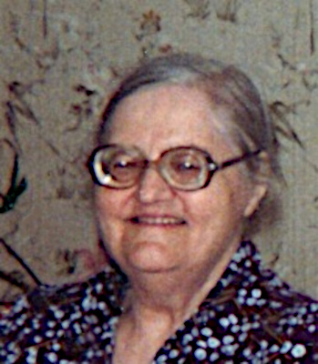

Född 8 apr 1961 i Norrköpings Borg (E) 1 .
Född 11 okt 1928 i Norrköpings Borg (E) 2 .
Död 22 nov 2010 på Vilbergsgatan 48, Gård 1, Kv Safiren, Vilbergen, Norrköping, Norrköpings Borg (E) 3 .
Född 29 maj 1936 i Lund, Drothem (E) 4 .
Född 17 okt 1900 i Gata, Skönberga (E) 5 .
Död 17 jan 1990 i Lunds jägmästaregård, Lund, Drothem (E) 3 .

MM Ester Sofia Linnea Larsson f Karlsson.Född 22 apr 1909 i Snörum, Mariehov, Drothem (E) 6 .
Död 5 nov 1985 i Lunds jägmästaregård, Lund, Drothem (E) 3 .
MMF Klas Ferdinand Karlsson.

Född 19 jun 1859 i Holmtebo, Ringarum (E) 7 .
Död 31 jan 1945 i Lunds jägmästaregård, Lund, Drothem (E) 3 .
MMM Hilda Sofia Karlsdotter.
Född 2 feb 1867 i Borrdalen, Fredriksnäs, Gryt (E) 8 .
Död 28 okt 1934 i Lunds jägmästaregård, Lund, Drothem (E) 3 .
 Född
29 feb 1984
i Norrköpings Borg (E)
Född
29 feb 1984
i Norrköpings Borg (E)